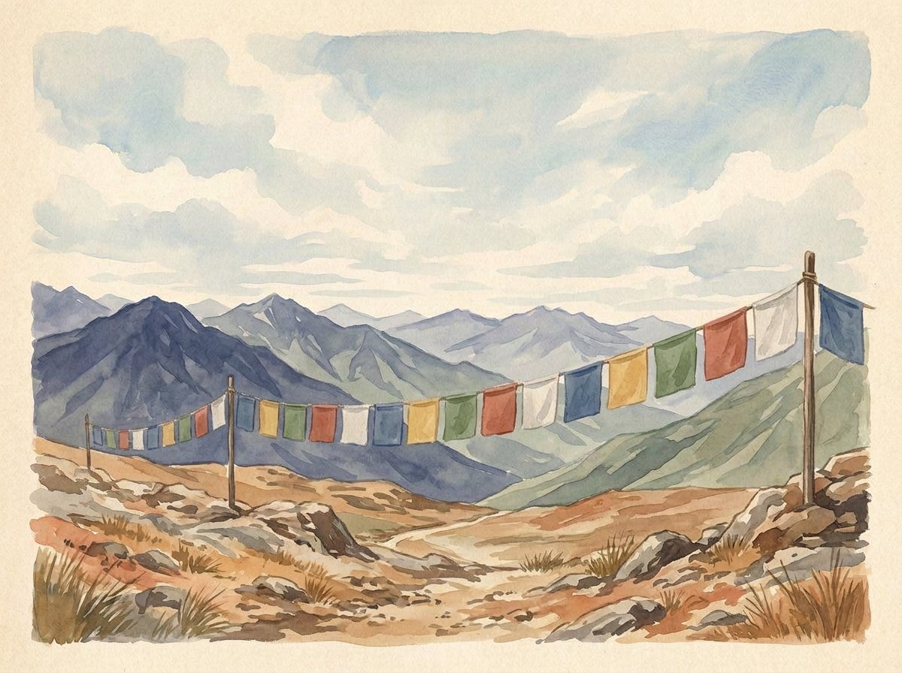

LUNGTA · VENT · VŒUX DE BIEN
Drapeaux de prière : couleurs et tradition du lungta
Les drapeaux de prière sont particulièrement liés aux cultures tibétaines et himalayennes. On imprime sur le tissu des mantras, des prières et des symboles ; lungta signifie « cheval du vent » et désigne souvent des guirlandes horizontales.

LUNGTA · « CHEVAL DU VENT »
Textes de prière à ciel ouvert
Les drapeaux peuvent représenter le cheval du vent, des symboles auspicieux, des mantras et des prières. Dans la tradition, le vent qui soulève le tissu évoque la diffusion de souhaits bienveillants. Il s’agit d’un sens religieux et poétique, non de la promesse littérale que les drapeaux changent les événements.
Une guirlande lungta courante est composée de pans de tissu carrés ou rectangulaires, attachés par leur bord supérieur à un cordon pour flotter au vent. Ce ne sont pas des fanions triangulaires. Il existe aussi des bannières verticales sur des mâts ; les noms et coutumes locales varient.
CINQ COULEURS
Une lecture courante, pas la seule
Une interprétation courante associe les cinq couleurs aux éléments naturels. Les cartes présentent des correspondances répandues, et non une règle universelle ; les explications varient selon les écoles et les régions.
- BleuEspace ou ciel
- BlancAir ou vent
- RougeFeu
- VertEau
- JauneTerre
UNE ATTITUDE RESPECTUEUSE
Contexte, lieu et soin du tissu
Les communautés ont des usages concernant le lieu et la manière d’accrocher les drapeaux, le remplacement des tissus usés et le traitement des textes. Suivez les indications locales si elles existent. Hors contexte religieux, évitez de réduire ces drapeaux à un décor : pour beaucoup, ce sont des supports de prière.